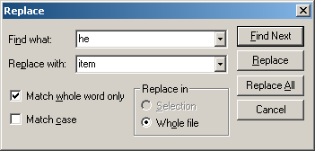

The Replace feature allows the user to search for specified text inside the curent file and possibly replace it with the "Replace With" text. You can search "Up" or "Down" from the current cursor position.
The "Match Whole Word" option searches for the text surrounded by whitespaces. "Match Case" performs a case-sensitive search.
Below is a screenshot of the Replace dialog:
